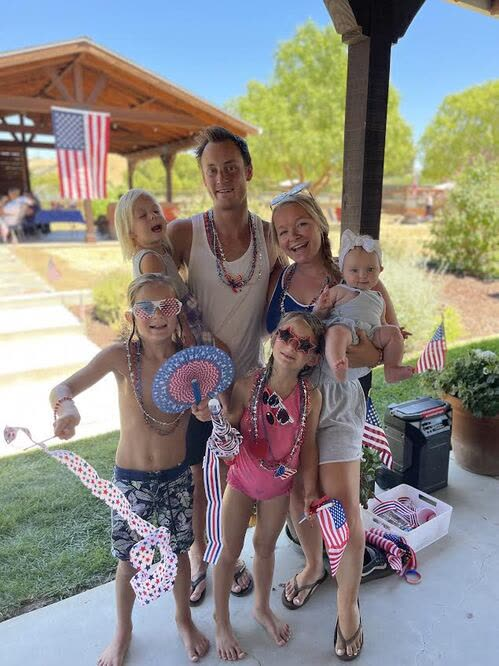

Hey church! My name is Emily Lomas. I’m 29 years old. I was born in Hawaii, and raised in the little beach town of Santa Cruz. It was an amazing childhood, growing up in a tight-knit homeschooling community, getting to play at the beach in Capitola, or head up the mountains to hike and explore in the gorgeous coastal redwoods. I was the oldest of 7 kids, and my dad loved to take us on “daddy days” on the weekends. Whether it was to Carmel, Half Moon Bay, or on some hike in the redwoods, there was always an adventure to be had. During the week my mom was always bringing us to different classes, and that included a lot of musicals, theater productions, and Christmas choirs. Looking back I’m not sure how she did it all! In 2011, after searching for 3 years during the housing crash, my family through God’s perfect timing and providence moved up here to Cool. Shortly after that move we began attending Cool Community. It was here, through serving in the worship and youth ministries that I met my now husband Jeff. We were married in 2014, and have been blessed over 10 years with 4 beautiful children, Tucker, Kinsley, Havyn, and Selah. We homeschool, and because of that flexibility during the school year we love to take family vacations to the ocean, desert or Disneyland! Summer is our favorite time of year, and you can find us regularly at the pool. In our free time at home we love to go on family hikes, have movie nights, share dinners with our large extended family, and more recently have incorporated family worship nights in our home, and at my parents.
I was blessed to be born into a Christian family, with grandparents and great grandparents that prayed over me from the start. Because of this, it’s hard to pinpoint an exact moment where I was “saved”, but I can think back to the age of 4-5 and asking Jesus to come into my heart. As I grew up, coming to understand that I am a sinner in need of a savior, and that Christ is that savior became more and more sweet to me. Looking back I can remember so many moments being involved in different musicals and Christmas choir productions, and I can see Gods hand slowly guiding me and laying the foundation of worship and leadership at a young age. One of the biggest impacts on my faith happened outside of church, through our own homeschool community that my mom had built. She would regularly lead different Bible and book studies with other moms, and we’d meet at a park or up in Mount Hermon. I remember sitting and listening to those studies, and observing that discipleship made a huge impact on me and how we should do life with other believers. My parents also hosted several Bible studies in their home, with friends from different church denominations and backgrounds. Witnessing that set a foundation for my own faith, and how to interact with others, and find unity in our faith in Jesus. At around the age of 14-15, I felt led to lead a young girls Bible study at my church, and my mom helped me set that up with our pastor. I continued to lead the same study for a time after moving to Cool. At the age of 16, God convicted me to make a public declaration of my faith, and I made the decision to be baptized by my dad at the American River with our church families river baptisms. All of these little stories interweave through my childhood, and I can again see Gods fingerprints through them all, slowly building my faith and trust in Him.
Shortly after moving to Cool in 2011, I joined the worship team here at Cool Community, during a time of transition between two different leaders splitting their time. On my first Sunday Heidi, who was one of the leaders at the time had me lead a “special song” for the service. I was 15, and although I had been involved in worship/choir/and different theater productions since I was 4, I had never served regularly in a worship team setting. The next 3 years serving in music ministry were very formative, and I’m thankful for the discipleship and growth that happened during that time. A short time after Jeff and I were married, we moved to a little town in Northern California called Susanville. We quickly got involved at an amazing church, and were plugged into a home group. My pastor found out I could sing and asked if I’d sing for their Christmas Eve service. I was 5 weeks postpartum with our first baby Tucker, but was excited to have the opportunity to serve through music again. From there I was on the worship team nearly every week for the next 2 1/2 years. We had the opportunity to open for Audio Adrenaline at our small town summer fair, which was such a fun experience! Those years were another huge season of growth and learning to allow the Holy Spirit to move through me to lead His church. Through that time we also added another baby to our family, Kinsley. We loved our church family dearly, but were feeling pulled to move back closer to family, so in 2018, we made the move back to Cool. Since we’ve been back, I’ve served on the worship team here at Cool Community off and on over the last 6 1/2 years, between adding two more babies to our family, Havyn and Selah.
From as far back as I can remember, I’ve always loved to sing. My grandma would say I sang before I talked! :) Music has always been woven into my life. I’ve found in times where I’m struggling, God will put lyrics to a certain worship song into my head, and I’ll subconsciously start humming or singing it, and before long I realize the lyrics will apply directly to whatever it is I’m going through. When I am worshipping our Lord through song, I feel like I’m stepping into what I was created to do. Everything else falls away, and His Glory and Majesty are at the forefront of my mind. My heart in worship ministry is to truly be a vessel used by Him, for His glory. Being able to lead His people in worship is one of the biggest blessings in my life! My favorite moments in worship are when I can get out of the way, step back from the mic and hear His congregation singing His praises. My goal as a worship leader is to be spirit led, and that Christ would be magnified in and through me. As the song so beautifully says, “Yet not I, but through Christ in me.”
“Because your steadfast love is better than life, my lips will praise you. So I will bless you as long as I live; in your name I will lift up my hands.”
Psalm 63:3-4 ESV
Sunday Mornings
10:30 am